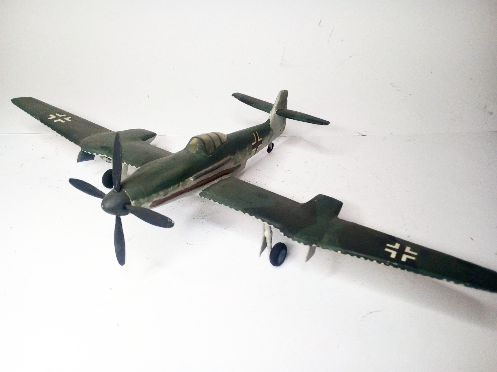
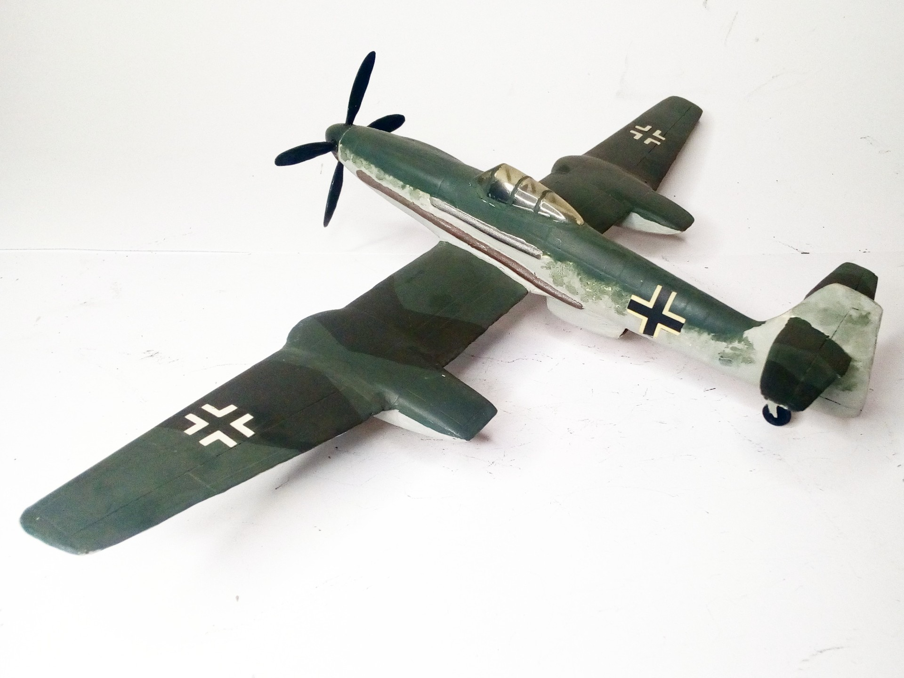

Aerei · scale model archive
Blohm und Voss BV 155 V1
Blohm und Voss BV 155 V1 — Kit: Airmodel vacform, Scale: 1/72. Prototype for an high altitude fighter loosely based on Me 109 #1/72 #Airmodel #vacform…

Photo gallery

English description
Prototype for an high altitude fighter loosely based on Me 109
#1/72 #Airmodel #vacform #Luft46 #BV155
Descrizione italiana
Prototipo per un caccia d’alta quota liberamente basato sul Me 109. #1/72 #Airmodel #vacform #Luft46 #BV155